Boîte · S4·F2 · 87 parties
A Rotten Harvest67,8 % de victoires
🇪🇸 ES · 🇬🇧 EN · 🇫🇷 FR · 🇩🇪 DE · 🇮🇹 IT
📖 Guide de Grimlash (killer) · Guide de Shady Acres (lieu)
Grimlash sur Shady Acres. Sur 87 parties enregistrées, on gagne dans 67,8 % des cas, 2,5 points au-dessus de la moyenne du jeu (65,3 %).
Échantillon réduit
Seulement 87 parties enregistrées. Réparties entre Dark Powers, Finales et Setups, chaque détail en compte très peu : à prendre comme un indice, pas comme un fait.
Ce qui la rend unique
Piste de Harvest Madness : un cœur soigne OU baisse la folie, jamais les deux. Les niveaux 1 à 3 donnent un bonus au choix. Dépasser le niveau 3 est une défaite immédiate. Les enfants kidnappent des victimes pour les emmener à l'autel. La tension risque-récompense de cette piste est très appréciée.
| Niveau | Intermédiaire |
| La carte | Les enfants sont des ennemis indépendants, pas des Minions : si vous mélangez ce lieu avec un autre killer, ses cartes Minion ne les affectent pas |
Comment fonctionne Grimlash
- Déplacement de base : se déplace pendant sa Killer Action avant d'attaquer.
- Commence avec 4 d'Horror et 10 points de vie.
- Inflige la Harvest Madness, qui donne des capacités à la Final Girl mais finit par causer la mort.
- Phase initiale du Killer : Target Final Girl or Victim > Move 1 > Attack > si une Victim est tuée, 1 Harvest Madness.
Résumé de la page du Final Girl Wiki (CC BY-SA).
La carte : Shady Acres
18 cases et 2 sorties (sud-est et nord-ouest). Cases de fouille : Old Barn, McCoy Farmhouse et Ralph's Garage. Six cases sont des Field Spaces (icône de blé) et une au nord-est est l'Altar of the Old Gods.
- Les Children sont des Enemies (pas des Minions) et agissent en phase du Killer avant le Minion ou le Killer, avec leur jeton : Target Final Girl or Victim > Move > Abduct.
- Sur 1 ou 2, Abduct emmène une Victim et un Child à l'Altar of the Old Gods et sacrifie la Victim (Bloodlust augmente comme d'habitude).
- Chaque Victim sacrifiée va sur le dessus du paquet Ancient Curses ; après trois sacrifices, on en pioche une carte.
- Un Child apparaît à chaque phase d'Upkeep, sauf si les trois sont déjà sur le plateau ou s'il ne reste aucune Victim.
Cartes propres: Ancient Curses (8), Children
Résumé de la page du Final Girl Wiki (CC BY-SA).
Le killer
Grimlash affiche 77,1 % de victoires toutes cartes confondues, sur 210 parties. Ici, sur Shady Acres, le chiffre est de 67,8 %.
Setups
Du plus dur au plus facile. Au moins 20 parties.
| Setup | Victoires | Parties |
|---|---|---|
| Dusk Sacrifice | 44,1 % | 34 |
| Harvest Season | 51,3 % | 37 |
| Final Crop | 52,8 % | 36 |
| Demands of the Earth | 68,0 % | 50 |
| Reap What You Sow | 75,0 % | 28 |
Entre Dusk Sacrifice et Reap What You Sow, il y a 31 points d'écart. La mise en place compte plus qu'il n'y paraît.
Dark Powers
| Dark Power | Victoires | Parties |
|---|---|---|
| Root-bound Curse | 62,5 % | 48 |
| Rite of the Corrupted | 74,0 % | 50 |
| Rite of the Old One | 81,8 % | 55 |
| Fields of Madness | 84,6 % | 39 |
Cartes Finale
| Carte Finale | Victoires | Parties |
|---|---|---|
| God of Blood and Grain | 64,0 % | 25 |
| Ancient Abomination | 75,9 % | 29 |
| Unrevealed | 75,9 % | 112 |
| Withered Harbinger | 86,4 % | 22 |
| Hunger of the Old Gods | 90,9 % | 22 |
Où la trouver
Liens affiliés : si vous achetez, je touche une petite commission, sans surcoût pour vous. Cela ne change rien aux données ci-dessus.
Comment démarrer la partie
Les quatre ouvertures, avec laquelle choisir selon la mise en place, sont dans les stratégies d'ouverture.
📖 Guide de Grimlash (killer)
Se joue avec n'importe quel lieu. ↑ haut
✴ = dégâts · 🩸 = Bloodlust · 🌾 = case Field · 🎭 = augmenter l'Horreur · ⊘🎭 = baisse l'Horreur
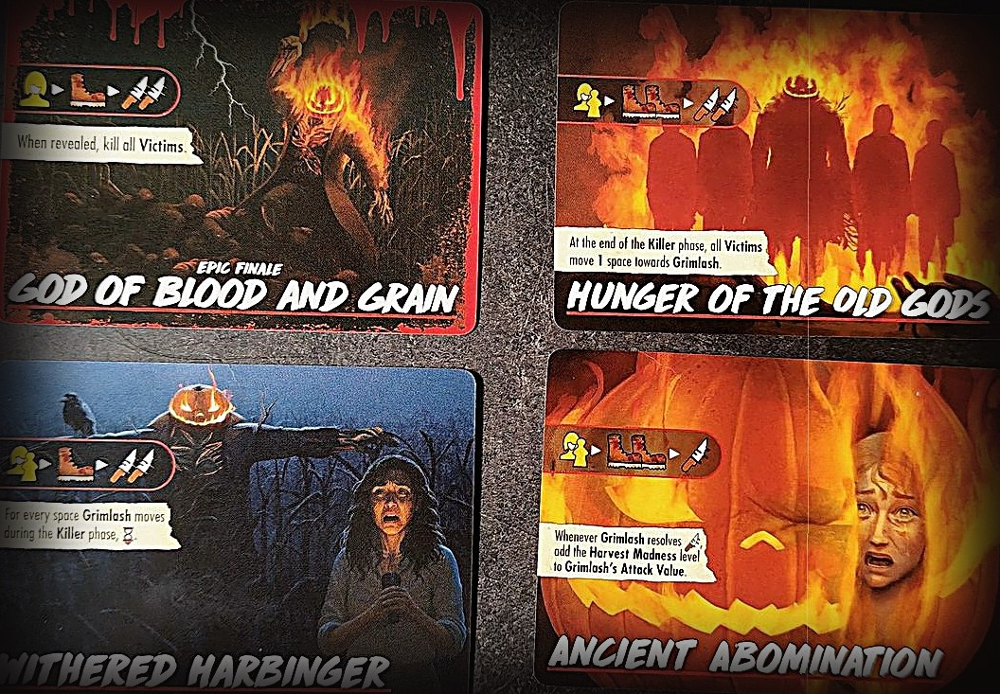
Erreurs fréquentes
- Grimlash se déplace de 1 lors de son Action du Killer. Quand une carte Terreur montre l'icône de la botte (déplacement), il se déplace de la valeur de mouvement correspondant au niveau de 🩸 actuel, pas de 1.
- Un soin ❤️ ne permet pas de soigner et de baisser la Harvest Madness en même temps : chaque cœur fait l'un ou l'autre.
- Quand la Harvest Madness descend d'un niveau, tu perds la carte de ce niveau.
Harvest Madness 🎃 · mise en place
- Sépare les cartes Harvest Madness par niveau et mélange chaque paquet : 3 pioches.
- Place le marqueur sur la case de départ de la piste Harvest Madness (entourée en orange), près du haut du plateau du Killer.
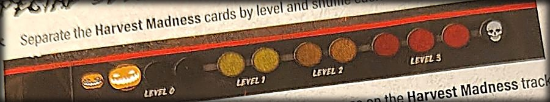
Harvest Madness 🎃 · fonctionnement
- Chaque fois que tu vois l'icône 🎃, avance le marqueur d'1 case vers la droite.
- Quand il atteint un nouveau niveau, pioche 2 cartes de la pioche de ce niveau, gardes-en 1 et défausse l'autre. Son effet dure tant que tu restes à ce niveau ou au-dessus.
- Si tu dépasses le niveau 3 (la case tête de mort), tu perds la partie immédiatement.
- Quand tu résous un soin ❤️, pour chaque cœur tu choisis : récupérer de la santé normalement ou baisser la Harvest Madness de 1. Jamais les deux.
- Si tu descends à un niveau inférieur, défausse la carte du niveau que tu quittes. Si tu y reviens plus tard, pioche de nouveau 2 cartes et gardes-en 1. Si la pioche est insuffisante, remélange la défausse de ce niveau.
- Les effets une fois par tour s'utilisent en retournant la carte face cachée ; elle revient face visible lors de l'Entretien.
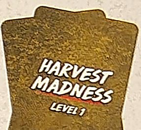
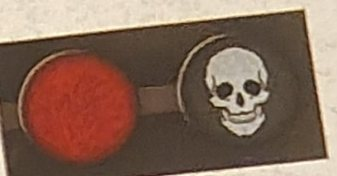
Finales
- Finale de base : vise toi ou la Victime la plus proche, se déplace d'1 case et attaque. Si une Victime a été tuée, 🎃 (Harvest Madness monte).
- Hunger of the Old Gods : vise, se déplace de 2 et attaque 2 fois. À la fin de la phase du Killer, toutes les Victimes se déplacent d'1 case vers Grimlash.
- Withered Harbinger : vise, se déplace et attaque 2 fois. Pour chaque case parcourue par Grimlash pendant la phase du Killer, tu perds ⌛.
- Ancient Abomination : vise, se déplace de 2 et attaque. Chaque fois qu'il résout une attaque, ajoute le niveau de Harvest Madness à sa valeur d'Attaque.
- God of Blood and Grain (Finale Epic) : te vise, se déplace et attaque 2 fois. Une fois révélée, toutes les Victimes meurent.
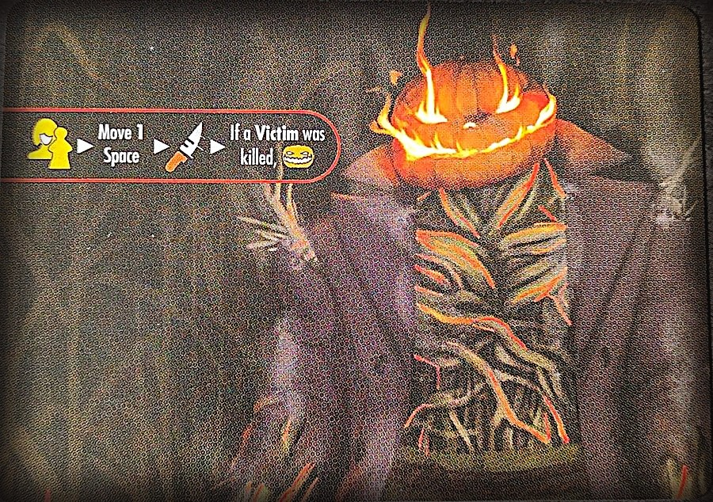
Dark Powers
- Root-Bound Curse : chaque fois que tu résous ❤️ pour te soigner ou baisser Harvest Madness, Grimlash récupère la moitié de ces ❤️, arrondie au supérieur.
- Rite of the Corrupted : pendant l'Entretien, 🎃 si Harvest Madness n'a pas augmenté ce tour.
- Rite of the Old One : chaque fois que Harvest Madness passe à un nouveau niveau, défausse la prochaine carte Terreur.
- Fields of Madness (Dark Power Epic) : tes jets d'Horreur changent selon le niveau de Harvest Madness. Niveau 0 ou 1 : un dé de moins (minimum 1). Niveau 2 : aucun effet. Niveau 3 : un dé de plus.
- Burning Sickle (Dark Power mineur) : chaque fois que Grimlash t'inflige des dégâts, il inflige aussi ✴ à chaque Victime de ta case.
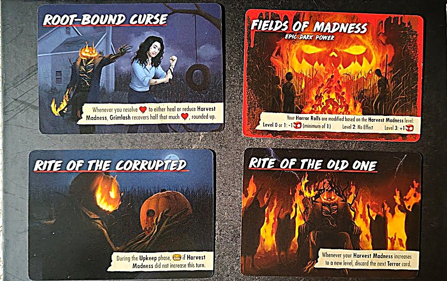
Cartes Terreur
- "Something's Wrong with the Kids" : les Children considèrent toutes les cases 🌾 comme adjacentes entre elles. Puis, Children seulement : visent toi ou la Victime la plus proche, se déplacent et résolvent l'icône des mains (enlèvement). Ensuite, 🎭.
- "Nobody Knows Where They Take Them..." : s'il n'y a ni Victimes ni Children sur le plateau, défausse-la et pioche la suivante. Sinon, toutes les Victimes dans la même case qu'un Child paniquent. Ensuite, pour chaque Child avec une Victime dans sa case, résous l'icône des mains comme si tu avais obtenu un 1.
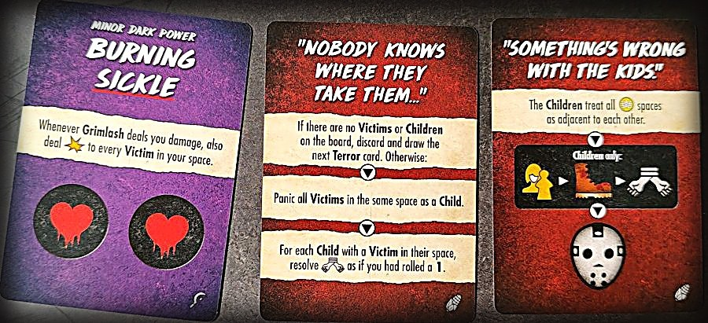
📖 Guide de Shady Acres (lieu)
Se joue avec n'importe quel killer. ↑ haut
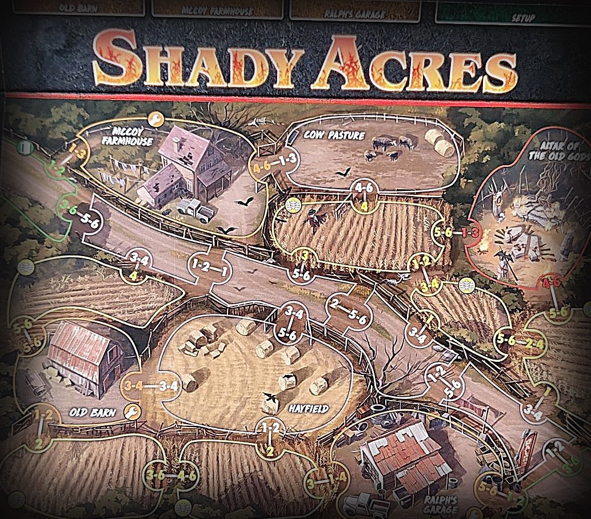
Erreurs fréquentes
- Les Children ne sont pas des Sbires, mais ce sont des Ennemis : ils ne résolvent pas les actions du Killer ou des Sbires sur les cartes Terreur, sauf si la carte précise que les Children le font.
- Si tu combines Shady Acres avec un autre Killer, les Children ne sont toujours pas des Sbires : les cartes de ce Killer qui mentionnent des Sbires ne les affectent pas.
- Si tu attaques les Children et qu'il y en a plusieurs dans la case, tu les attaques tous et tu répartis les dégâts ; les dégâts en trop sont perdus.
- Un enlèvement dans une case sans Victime n'est pas perdu : il compte comme une attaque.
Mise en place spéciale
- Mélange les cartes Ancient Curse en une pioche face cachée.
- Place la carte Children près du plateau, un Child sur l'Altar of the Old Gods et les autres sur la carte.
- Place le jeton Action des Children au-dessus des actions des Sbires ou du Killer sur la carte Finale : ils agissent avant tous les autres Ennemis.
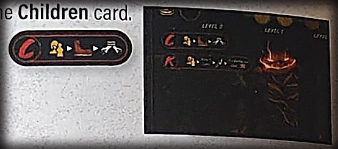
Les Children
- Leur carte indique leur santé, leur attaque et leur mouvement. Ce sont des Ennemis, pas des Sbires.
- Ils agissent au début de la phase du Killer, avant les Sbires et le Killer, un par un : le plus proche de l'Altar d'abord.
- À chaque Entretien, un Child apparaît sur l'Altar, sauf si les trois sont déjà en jeu ou s'il ne reste plus de Victimes.
- On peut les attaquer et les tuer : un Child mort retourne sur la carte et peut réapparaître.
- Les Victimes te suivent dans une case avec des Children, sauf si le Killer y est aussi.
- Pendant la phase de Panique, les Victimes dans une case avec un Child paniquent si au moins une Victime a été tuée ce tour-ci.
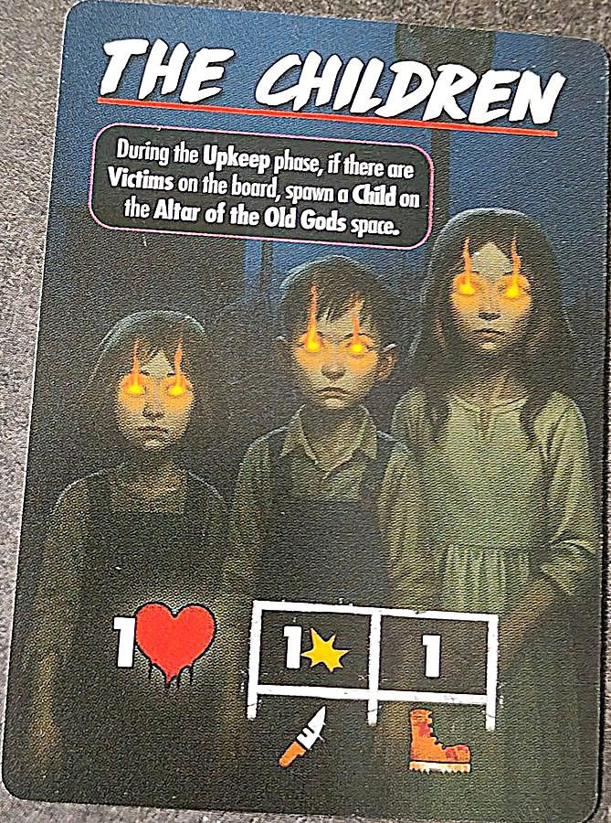
Enlèvements
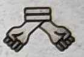
- Quand un Child résout l'icône d'enlèvement dans une case avec une Victime, lance un dé.
- 1-2 : la Victime est sacrifiée sur l'Altar (tuée). Le Child retourne à l'Altar, 🩸 augmente normalement et la Victime est placée au dos de la carte Ancient Curse du dessus.
- 3-6 : il ne se passe rien.
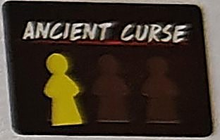
Ancient Curses
- Avec 3 Victimes sacrifiées dessus, retire-les et révèle la malédiction, qui entre en jeu. Plusieurs peuvent être actives en même temps.
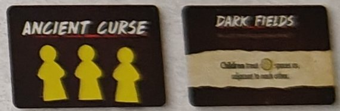
Cases Field 🌾
- Les cases avec l'icône de blé sont des cases Field. Beaucoup de cartes de cette boîte les utilisent, en bien comme en mal.
Mises en place
K = départ du Killer · figurine jaune = la Final Girl · chiffres = Victimes par case.


Objets

Défausse-le pour récupérer 4 Santé.

2 utilisations. Déplace-toi de 2 cases maximum.

Si tu commences ton déplacement dans une 🌾, tu peux te déplacer d'1 case supplémentaire.

2 utilisations. Après avoir pioché une carte Terreur mais avant de la résoudre, tu peux la mettre sous la pioche et piocher la suivante.

Défausse-le pour reprendre 1 Objet défaussé, avec toutes ses utilisations.

2 utilisations. Échange un Child de ta case contre une Victime normale.

3 utilisations. Une fois par tour, avec 🎭, tu peux te placer dans n'importe quelle 🌾.

Grimpe sur une vache ! Défausse-le pour te déplacer de 4 cases max.

Place la Combine dans ta case. Si tu te déplaces avec elle en résolvant une carte Action Walk, tu peux avancer d'1 case de plus. En entrant dans un 🌾 avec la Combine, pose un jeton Harvested : ce n'est plus un 🌾.

Défausse-la pour ⊘🎭⊘🎭⊘🎭 (baisse l'Horreur de 3).

Défausse-la pour retirer du jeu une Ancient Curse active.

Arme · portée 0-1 · 1 dégât · 2 mains. Quand tu attaques des Ennemis dans une 🌾, tu peux répartir les dégâts entre eux. Ensuite cette case devient Harvested et n'est plus une 🌾.

Arme · portée 1 · 2 dégâts · 2 mains · 2 utilisations. Ne peut pas être utilisée contre des Ennemis dans une 🌾.

Arme · portée 0 · 2 dégâts · 2 mains. Si ton jet d'Horreur final n'a aucun succès, défausse-la.

Arme · portée 0 · 2 dégâts · 1 main · 2 utilisations.

Arme · portée 0 · 1 dégât · 1 main. Utilisations illimitées.
Événements de Shady Acres
- Umbral Evocation
- Place le jeton Harvest Shadow dans la case du Killer. Chaque fois que toi ou une Victime y entrez : 🩸.
- Acres of Hatred
- Pour chaque 🌾 avec au moins une Victime : 🩸 (max 2). Défausse.
- “The Fields Are Moving…”
- Place un jeton Field sur Hayfield et Cow Pasture : elles deviennent des 🌾.
- Festering Rot
- Chaque fois qu'une Victime est tuée dans une 🌾 : 🎭.
- It Hungers For Us
- Toutes les Victimes paniquent. Pour chaque Victime dans la case du Killer ou adjacente : 🎭 (max 3). Défausse.
- Harvest Cultist
- La Victime la plus proche de toi devient le Cultist. À chaque Entretien, il avance d'1 case vers toi ; s'il est avec toi, vous avancez tous les deux d'1 case vers le Killer. Le sauver rapporte une récompense.
- Ralph the Mechanic
- Ralph commence dans Ralph's Garage. Tant qu'il est avec toi, les Objets à utilisations limitées que tu prends gagnent une utilisation supplémentaire.
- Sally McCoy
- Sally commence dans la McCoy Farmhouse. Quand elle est sauvée, cherche les Combine Keys dans la pioche d'Objets.
- It Lurks Between the Rows
- Toutes les Victimes dans un 🌾 paniquent. Celles qui fuient dans la case du Killer meurent. Défausse.
- The Ravens Are Circling
- Chaque Child avance de 2 cases vers le Killer. Pose sur cette carte autant de marqueurs de vie que de Children dans sa case. Quand le Killer subit des dégâts, retire d'abord ceux de la carte. Défausse-la quand il n'en reste plus.
Texte à nous, d'après le livret de règles, les cartes et le wiki. Noms des cartes en anglais. Une erreur ? Dites-le-nous.